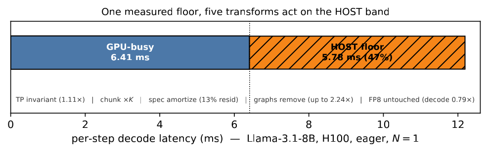
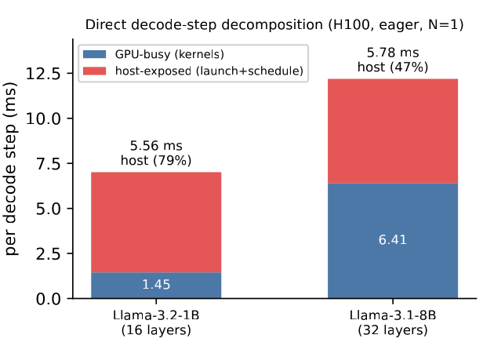
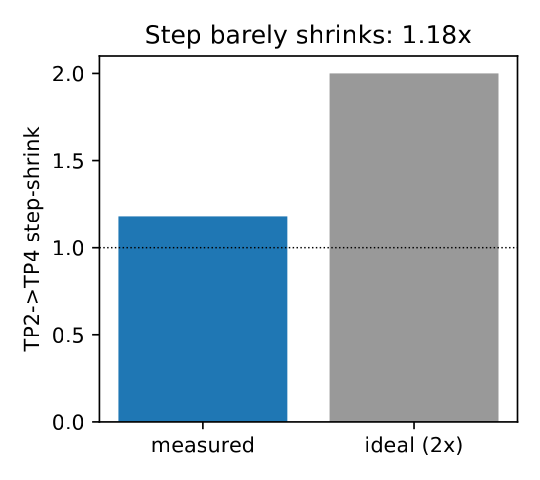
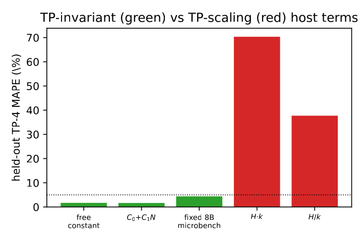
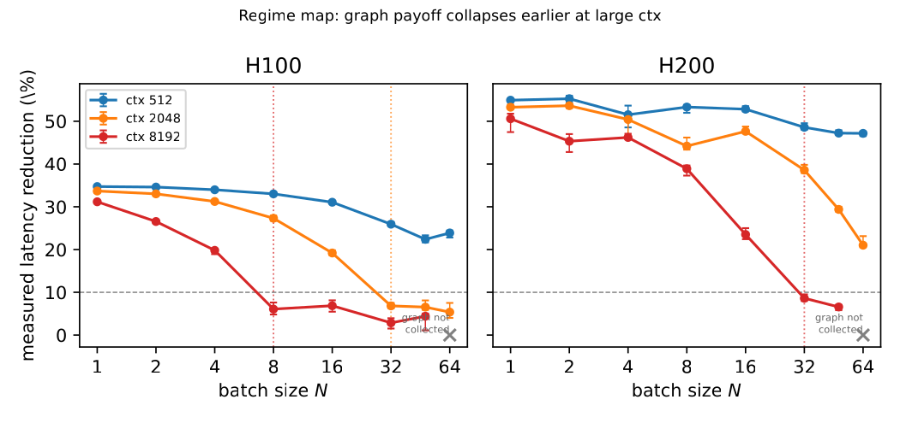
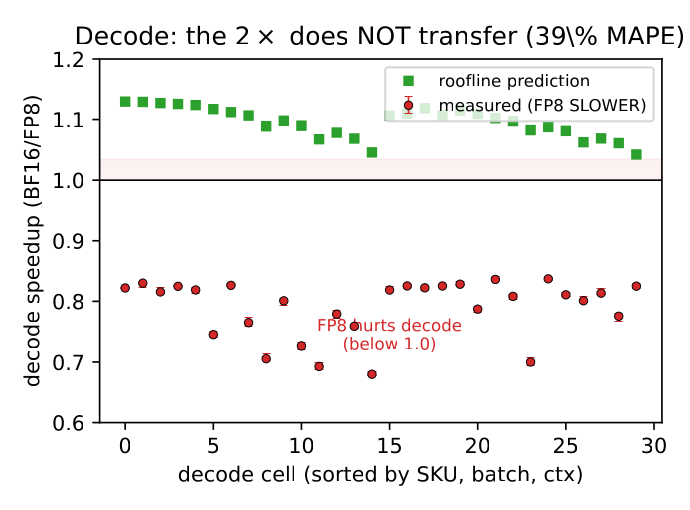

A direct, overlap-validated measurement and a two-regime map for small-batch LLM serving. A large fraction of each eager decode step is not GPU work at all — and we map exactly where that matters and where it stops mattering.
Status page — generated to confirm the current state of a two-day iterative-review effort.
This page documents a working paper that has been driven through repeated adversarial review for two days. The honest summary up front: the paper's internal consistency is now strong, but its headline cold-reviewer score has settled, and one of its central claims was weakened — not by a reviewer's opinion, but by one of our own controlled experiments. The sections below report that outcome plainly rather than presenting the paper as finished.
The final gate is a cold “nightmare” reviewer: GPT-5.5-Pro reading only the paper PDF/source, with a prompt that carries zero claims, numbers, or hints. It is deliberately the harshest realistic reading — a reviewer who sees the paper itself and nothing else. The score moved in exactly two places, and each movement is informative.
| Round | Score | What changed since the previous round |
|---|---|---|
| r7 | 3 / 10 | Baseline self-containment pass; in-paper recomputable anchor table added. |
| r8 | 3 / 10 | Reviewer found a real provenance contradiction in a fitted term (later fixed). |
| r9 | 3 / 10 | Symbol overloading and a residual/floor contradiction surfaced and were resolved. |
| r10 | 4 / 10 | First upward movement — purely from resolving the internal contradictions. No contradiction has reappeared since. |
| r11 | 4 / 10 | Full per-cell verifiability tables added for the predictive result. |
| r12 | 4 / 10 | Per-axis appendix data tables; a cross-harness labelling issue caught and fixed. |
| r13 | 3 / 10 | Downward movement — from honestly reporting a controlled experiment that weakened the size-stability claim (see §3.3). |
Two independent ceilings hold the cold score in the 3–4 range, and it is worth stating both rather than only one.
The cold reviewer is fed the paper source through a chat upload, which carries only the manuscript — not the multi-megabyte raw nsys traces, per-cell CSVs, or plotting scripts. Every round names the same first blocker: for a measurement paper, the underlying data are not attached, so reproducibility cannot be confirmed from the upload. This caps the achievable score independent of how the paper is written.
Once every caveat is stated truthfully, the central object is a regime-dependent, model-dependent, harness-sensitive exposed residual — a real and useful characterization, but not a tight, portable, mechanism-proven latency floor. A reviewer who rewards strong, verifiable claims correctly reads the honest version as a solid characterization rather than a strong systems result.
The two ceilings have different remedies. The first would lift only under a review channel that carries the artifact (an artifact-evaluation track, or a file-access reviewer). The second would lift only with fundamentally stronger results — a CPU-pinned, NUMA-isolated controlled program that demonstrates a genuinely tight floor — which the data gathered so far do not support. Neither remedy is a matter of rewriting, and we have not pursued the score past the point where pursuing it would require overstating the evidence.
Each review round that found a substantive gap was answered with a real PACE measurement rather than a rewrite. The table records what was run and what it settled.
| Experiment | Hardware | What it settled |
|---|---|---|
| Anchor split (nsys 1-vs-512 differencing) | H100 | The host-exposed residual exists and is directly measurable without a model: 5.78 ms at 8B. |
| Kernel interval-union vs kernel-sum | H100 | Decode kernels overlap <1%, so the kernel-sum is faithful GPU-active wall and the residual is genuine non-GPU time. |
| Direct TP-1/2/4 host/GPU split | H100 ×1–4 | Overturned an earlier claim: the host floor collapses under tensor parallelism (5.79→0.48 ms), it is not preserved. |
| Batch sweep (1/4/16/64), one model+SKU | A100-80 | Resolved the host-bound→GPU-bound transition as a smooth curve (6.51→0.59 ms) without a model/hardware confound. |
| py-spy CPU profile of the V1 process tree | L40S | 91% of host-thread time sits in inter-process synchronization — consistent with (not proof of) the residual being the V1 IPC round-trip. |
| Controlled same-family Llama R=5 sweep (1B/3B/8B) | A100-80 | Refuted tight size-stability: the 3B floor is a reproducible ~50% excursion (9.83 ms) above its 1B/8B neighbours. See §3.3. |
That last row is the most important result of the two days, even though it lowered the score. It is the loop working as intended: an experiment run to strengthen the keystone instead falsified the tight version of it, and the paper now says so.
The standard mental model of large-language-model decode latency is GPU-centric. Roofline analyses divide weight bytes by HBM bandwidth, count attention FLOPs, and add an all-reduce term; simulators such as Vidur fit per-operator runtimes from profiled kernels. These models are accurate on the workloads they target — high-throughput, large-batch serving where the GPU genuinely is the bottleneck. This section walks through why that model omits a term that, at the small batch sizes of latency-sensitive interactive serving, is roughly half of every step.
Decode is not prefill. Prefill processes the whole prompt in one compute-dense pass; decode then emits one token per step, each step a thin forward pass over a single new position with a full attention read of the KV cache. The two phases sit on opposite sides of the roofline. At the small batch sizes that latency-sensitive chat and agent traffic actually run at, the GPU work of a decode step is tiny — a few milliseconds — while the per-step CPU dispatch the engine performs every iteration is not. When the GPU drains its kernel queue faster than the host refills it, launch and scheduling time is exposed on the critical path rather than hidden behind compute. The GPU-centric model has nothing to say about this, precisely in the regime where users feel latency.
Take one cell at request granularity. On an H100 in eager mode, with batch 1 and context 2048, the Llama-3.1-8B decode step measures 12.19 ms of wall time. Of that, 6.41 ms is GPU-active kernel time; the remaining 5.78 ms — 47% of the step — is wall time during which the GPU is idle. A weight-byte roofline, given the 8B weights and the H100's bandwidth, predicts the 6.41 ms GPU portion well and is silent about the other half. An operator who tunes the GPU term alone — a faster kernel, a better-packed GEMM — moves 6.41 ms and leaves 5.78 ms untouched. That is the failure the paper starts from: the dominant model predicts the smaller half of the step.
The obvious response is to attach an in-process profiler and read off the host time directly. This fails for a structural reason: vLLM's V1 engine runs the model in a separate EngineCore subprocess driven by a Python iteration scheduler. An in-process NVTX or profiler-control API, attached to the main process, captures zero engine kernels — a fact that defeated three earlier attempts at this measurement. The model's kernels live in a different process from the timing harness.
A second, deeper obstacle remains even once the kernels are captured. The quantity wall minus GPU-active is a residual, and a residual is not automatically “host time.” It can contain CPU scheduling, inter-process synchronization, Python overhead, OS jitter, host-to-device copies, or uninstrumented kernel overlap. Proving that the residual is genuinely exposed non-GPU wall time, and characterizing what it is, requires overlap validation and direct profiling rather than assumption. The paper's method is built around exactly these two obstacles.
The paper is not the first to observe that host overhead is real and large; a small, very recent cluster of work measures it directly, and the contribution is positioned carefully against it. TaxBreak, the closest prior art, decomposes host-visible orchestration into framework-translation, CUDA-library, and launch-path components and characterizes a per-kernel launch floor — but per configuration, with no model-size-stability test and no predictor. Studies of CPU-induced slowdowns show such overhead persists through CUDA-graph capture in the multi-GPU case, which both motivates and bounds the graph result here. Latency simulators such as Vidur are accurate precisely because they fit per-operator constants — which silently absorb the launch/dispatch time rather than expose it as a separable term. The gap this paper targets is an overlap-validated, per-step, wall-minus-GPU residual, read off in minutes from a single two-point differencing, and mapped into two regimes rather than tabulated per configuration.
The core measurement isolates the per-step decode split with no model and no fit, then validates that the split is real rather than a profiling artifact. This section gives the method, the anchor numbers, and the three validation checks that make the residual trustworthy.

Because an in-process profiler captures nothing, the method lets nsys passively capture the EngineCore subprocess's kernels over an entire run, and runs the identical decode twice — once generating one token, once generating 512 — then differences the kernel-sum totals. Model load, warmup, and prefill are byte-for-byte identical across the two runs, so the difference isolates the 511 intervening decode steps and yields their average steady-state cost. The GPU-active time per step is the differenced kernel-sum divided by 511; the host-exposed residual is the wall time per step minus that.
The construction is model-free: it makes no assumption about what the host is doing, requiring only that the two runs differ by the intervening decode steps. What the residual $H$ actually is becomes a separate, empirical question, answered by the validation below rather than assumed.
On an H100, eager, batch 1, context 2048, the two anchor cells split as follows. The figure shows the same split: GPU-busy time grows 4.4× from 1B to 8B while the host-exposed portion barely moves.
| Cell | Wall / step | GPU-active | Host-exposed residual | Host fraction |
|---|---|---|---|---|
| Llama-3.2-1B | 7.01 ms | 1.45 ms | 5.56 ms | 79.3% |
| Llama-3.1-8B | 12.19 ms | 6.41 ms | 5.78 ms | 47.4% |

Three objections were tested directly rather than waved away. First, does the kernel-sum understate GPU time by ignoring overlap? In eager mode kernels are serial on one stream; re-extracting GPU-active as the kernel-interval union matches the kernel-sum to within 0.038 ms/step at 8B and 0.011 ms/step at 1B — under 1% — so the kernel-sum is faithful GPU-active wall and the gap is genuinely host-exposed. Second, could the gap be host-to-device copy? Decode moves one token id in and at most one logit row out per step — a few hundred KB over NVLink/PCIe — so the transfer and its synchronization are microseconds, two to three orders of magnitude below the 5.78 ms gap. Third, is the two-point slope a fragile artifact? Sweeping the decode length over a decade and fitting the per-step wall gives a linear fit to $R^2 = 0.9996$, and the two-point slope agrees with the ten-point fit to 0.55%. The same holds for the kernel-sum, so the differencing is unbiased for both terms.
The residual is profiled two ways. Within the GPU subprocess, the CUDA-API time spent while the GPU is idle between decode steps is small — a median ~0.04 ms/step of launch/runtime calls, under 1% of the 5.78 ms — which rules out in-subprocess micro kernel-launch duration as the bulk of it. A py-spy profile of the whole V1 process tree then shows where the host-thread time goes: 91% sits in the host pipeline, dominated by inter-process synchronization — socket poll/wait on the EngineCore-to-main-process channel — with active host compute under 2%. This is reported as consistent with the residual being the V1 multiprocess IPC/orchestration round-trip, and explicitly flagged as a thread-state distribution rather than a per-step critical-path apportionment. The paper does not overstate it into a proven mechanism.
The central result is not a single invariant but a map: a regime where the host residual is large and same-order across model sizes, and a regime where it collapses as the GPU step grows long enough to hide the host work. This section gives the map, the boundary variable, and — most importantly — the controlled experiment that forced an honest weakening of the stability claim.
In the host-bound regime — small, fast models at small batch on a single GPU, where GPU-active time is roughly 20 ms per step or less — the residual is large, between a quarter and four-fifths of the step, and order-of-magnitude stable across model size (~6–10 ms). As the GPU step grows long enough to overlap the host work, the exposed residual declines smoothly: it reaches ~1.5 ms at a 32B single-GPU split and a direct 70B four-way tensor-parallel split, and as low as 0.59 ms in a batch sweep at batch 64. The host fraction — falling from roughly 72% to a few percent — is what marks the boundary between the two.
An early version of the map defined the regimes by a GPU-active-millisecond threshold, and a reviewer correctly broke it: batch 64 reaches GPU-bound at only 28 ms of GPU-active time, and TP-2 8B at only 15 ms, because communication and large batch fill the step in ways model compute does not. The boundary variable is therefore the measured host fraction itself — large in the host-bound regime, small in the GPU-bound one. This is operational rather than circular: the fraction is the quantity an operator measures in minutes to place a workload, and it is what determines which optimization pays.
The original size sweep mixed model family with size: Llama at 1B and 8B, Qwen at 14B and 32B. Size-stability could therefore be a family coincidence. To separate the two, a same-family Llama-3.x sweep was run in a single A100 job — same node, same host conditions — at 1B, 3B, and 8B, with five independent replicates each. The result did not confirm tight stability; it refuted it.
| Model (Llama-3.x, R=5, one A100 job) | GPU-active | Host floor (mean, sd) | Reading |
|---|---|---|---|
| Llama-3.2-1B | 2.64 ms | 6.88 ms (sd 0.08) | neighbour |
| Llama-3.2-3B | 5.98 ms | 9.83 ms (sd 0.14) | ~50% above both neighbours — reproduced in a second job |
| Llama-3.1-8B | 11.19 ms | 6.57 ms (sd 0.14) | neighbour |
Because 3B sits between 1B and 8B in size, a monotonic size effect cannot make its floor higher than both. The first run was a separate job, raising the possibility of per-job host contention; but the controlled single-job rerun reproduced 9.83 ms within 0.01 ms, so it is a real, model-dependent effect rather than node noise. Layer count does not explain it either — the 8B model has more layers yet a lower floor. The honest conclusion is that the host floor is not tightly size-stable even within one family on one SKU; it is order-of-magnitude stable (~6–10 ms), with model-specific factors moving it by tens of percent. The paper now states exactly this — in the abstract, the keystone table, and the limitations — and that honesty is what cost the score its last point. Identifying the precise cause of the 3B excursion is open work.
Having mapped the two regimes, the paper takes four serving optimizations in turn, states the GPU-centric expectation each violates, and reports the direct measurement the residual explains. The honest framing is that the residual ties these four together as a lens; the per-axis evidence varies in directness, and the paper says so for each.
| Optimization | GPU-centric expectation | Effect on the residual | Headline measurement |
|---|---|---|---|
| Tensor parallelism | k GPUs ⇒ ~k× faster | collapses it (GPU/comm-bound) | 8B floor 5.79→0.48 ms TP-1→TP-2; wall rises 12.1→15.9 ms (slower) |
| Speculative decoding | speedup = accepted tokens | amortizes it | 0.768 ms/cycle residual = 13% of floor; 6.15× at α=1.0, 0.98× at α≤0.02 |
| CUDA graphs | marginal at large batch | removes its launch/dispatch part | up to 2.24× (55%) in host-bound cells; grid mean 31.9% |
| FP8 | lower precision ⇒ faster | leaves it untouched (inferred) | decode slower in 30/30 cells (0.79×); prefill 1.45× faster |
A direct TP-1/2/4 split on the same 8B model settles what tensor parallelism does to the floor, and the answer overturns an earlier draft's claim. The host floor is 5.79 ms at TP-1 — an independent job that reproduces the 5.78 ms anchor to 0.01 ms — but collapses to 0.48 ms at TP-2 and 0.98 ms at TP-4. The measured cause is that GPU-active time jumps from 6.3 to 15.4 ms as NCCL all-reduce and multi-rank coordination fill the step, so much so that for 8B, TP-2 is actually slower in wall time than TP-1 (15.9 vs 12.1 ms). Tensor parallelism is therefore a third knob, with model size and batch, that pushes the step into the GPU-bound regime; it does not preserve the floor.


=38%.">The separate, secondary result is that tensor parallelism's failure to give a k× speedup is a GPU-side fact: a batch-invariant additive term — dominated by per-rank weight streaming and NCCL, not the host floor — does not divide by k. With that term pinned from an independent 8B single-GPU microbenchmark and the compute scale fit on TP-2 cells, a k-invariant model predicts the held-out 70B TP-4 cells to 4.4% mean absolute percentage error, against 16.9% for a compute/k+comm baseline. The paper is explicit that this fitted term is about three times the measured host floor, is not the host floor, and that the 8B-to-70B transfer is a regularity in additive magnitude rather than shared physical composition. It also reports an honest negative: on a held-out H200 TP-4 SKU, six cells fall below the additive model's implied lower bound, so the predictive claim is scoped to H100.
Through the host lens, speculative decoding's small-batch benefit is host-term amortization: a draft-verify cycle pays one per-step host term but can emit many tokens, so the per-output-token cost falls as acceptance rises. On a high-acceptance repeat workload the per-token speedup reaches 6.15×; on an open creative workload with near-zero acceptance there is essentially none (0.98×). The paper is explicit that the decomposition is an accounting identity once cycle time and acceptance are measured, and that its content is isolating the per-cycle host residual (0.768 ms, 13% of the floor) and showing acceptance behaves as a hardware-independent workload property across the two SKUs tested.


CUDA-graph capture replays the per-step host-dispatch loop as a single launch, so it claws back the launch/dispatch component of the residual where the host fraction is large — up to 2.24× on a host-bound H200 cell, with a grid-mean reduction of 31.9% that tracks the host fraction and collapses past a context-ordered crossover. FP8 is the orthogonal case: weight quantization halves the weight byte stream, a GPU-side memory term, but at small-batch decode that stream is already subdominant to the host floor, so halving it cannot help, while the W8A8 path bolts on a per-matmul quantization kernel and ~1.7× the host launches. The trade is net-negative — decode is slower in all 30 measured cells — even as FP8 prefill is 1.45× faster. The paper is careful that floor-invariance under FP8 is inferred from the unchanged host instruction path plus the slowdown, not from a direct FP8 host/GPU split, which it did not capture.
What the work establishes: small-batch eager LLM decode has a large non-GPU exposed residual that GPU-only latency models miss; it is order-of-magnitude stable (~6–10 ms) in the host-bound regime; it collapses, smoothly, once the step is GPU-bound through model size, batch, or tensor parallelism; the host fraction is the boundary; and four serving optimizations each move it in a characteristic way. Every internal number is now self-consistent, every headline that can be recomputed in-paper has been made recomputable, and every contradiction a paper-only reviewer raised has been fixed.
What it is not: a tight, portable, mechanism-proven host-latency floor. The residual is regime-dependent, model-dependent (the 3B excursion), and harness-sensitive (a same-shape benchmark in our own project implies a ~3.0 ms floor rather than 5.78 ms). The mechanism is profiled and consistent with V1 IPC, but not causally apportioned on the per-step critical path. These are stated as limitations, not hidden. The result is an honest characterization at the level its evidence supports — and the two-day effort's most valuable single outcome was an experiment that made that boundary sharper, even at the cost of a review point.